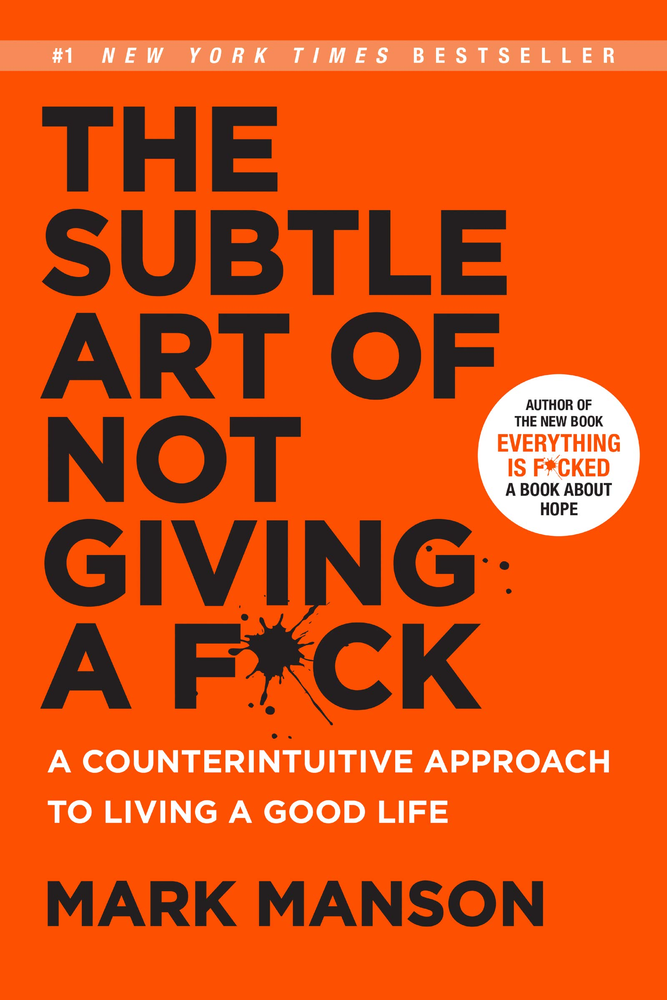

The Subtle Art of Not Giving a F*ck (Mark Manson, HarperOne, 2016) opens with the poet Charles Bukowski, whose gravestone reads "Don't Try". Manson uses him to argue that the self-help promise of feeling great all the time is itself a source of misery: the more you chase feeling better, the worse you tend to feel.
His alternative is not apathy. Since attention is finite, the only real choice is what to care about. Across nine chapters he argues that happiness comes from solving problems, that being "special" is a trap, that your values decide whether your struggles are worthwhile, that you are always responsible (though not always at fault), that being less wrong beats being right, that action produces motivation, that commitment means saying no, and that mortality is what gives the choice its urgency.
The voice is profane and funny on purpose. Much of the underlying advice will sound familiar to readers who know Stoicism or Buddhist ideas, and the book works through anecdote and argument rather than research.
Opens with Charles Bukowski, who is presented as succeeding by accepting his own failures and mediocrity rather than pretending otherwise. This sets up the Backwards Law (the more you chase feeling better, the worse you feel) and the Feedback Loop from Hell (feeling bad about feeling bad).
The proposed antidote is to care about what is true, immediate and important, because you only have a limited number of f*cks to give.
Happiness is described as coming from actively solving problems, with suffering serving a biological purpose by pushing us to change. Two ways of dodging this are denial and a victim mentality. The summary also mentions the hedonic treadmill, the habit of chasing the next high.
The aim is a life of "good problems" you enjoy solving, rather than a life without problems.
A critique of the self-esteem movement and the cultural pressure to be extraordinary, which the summary says is amplified by social media. Manson argues most people are average at most things and that accepting this is healthier than chasing exceptionalism.
Entitled people read every event as either confirming or threatening their greatness. Redefining success in ordinary terms, such as being a good friend, is the suggested alternative.
Suffering is inevitable, so what matters is the values you suffer for. The summary describes "shitty values" (pleasure, material success, always being right, staying positive) as ones that rely on things outside your control, and "good values" as reality-based, socially constructive and controllable, such as honesty, curiosity and self-respect.
It also mentions the "self-awareness onion" (asking why repeatedly to reach your real motives) and the story of Hiroo Onoda, a soldier who kept fighting a war that had ended, as a picture of clinging to a meaningless value.
The fault versus responsibility distinction: fault is about the past and who caused something; responsibility is about the present and how you respond. You can be responsible for a situation you did not cause.
The summary says Manson draws on William James and on Malala Yousafzai's response to being shot. Change, he argues, starts with choosing to care about something different.
Growth is framed as becoming "less wrong", not as becoming right. The summary describes the mind as a "meaning machine" that builds false associations, and gives Manson's Law of Avoidance: the more something threatens your identity, the more you avoid it.
Practical habits include asking "what if I am wrong?" and holding identities loosely.
Success tracks how much you are willing to fail. The Do Something principle says action produces motivation rather than the reverse, so when stuck you take the smallest possible step and let momentum follow.
Process-oriented values (such as being honest or learning) are described as endless and fulfilling, unlike one-off external goals.
Freedom means little without rejecting alternatives; we are defined partly by what we refuse. Boundaries build trust, and the summary applies this to relationships: healthy love is two people solving their own problems, unhealthy love is one person trying to rescue the other.
Commitment is presented as a source of freedom because it focuses your attention.
Death gives life its contrast. The summary describes "immortality projects", the stories people build to outlive themselves, and says Manson recounts the death of a friend, Josh, as a turning point in his own life.
The closing argument returns to the opening: out of everything you could care about, what is worth caring about given that you will die?
The book has no formal method, but five linked ideas carry its argument. Each is broken down below. The structure follows published chapter summaries; the scenarios are my own illustrations, not examples from the book.
The Backwards Law, as summarised, says the harder you chase a positive state, the more you reinforce the sense that you lack it. The Feedback Loop from Hell is the compounding version: you feel anxious, then feel anxious about being anxious, then ashamed of that. The way out the book points to is to stop adding the extra layer of judgment.
The book's title idea: attention and emotional energy are finite, so the question is not whether to care but what to care about. Chapter 3 attacks the habit of making yourself the centre of everything, and Chapter 9 uses mortality to sharpen the selection.
Per the summary, Manson separates fault (past tense) from responsibility (present tense). You can be responsible for something you did not cause, and refusing that responsibility tends to leave you stuck. The grid below is my own way of laying out the combinations, not the book's.
The summary lists three tests for a good value: it is based in reality, it is socially constructive, and it is within your control. Values that fail them, with pleasure, material success, always being right and staying positive named as examples, leave you perpetually dissatisfied because they depend on outcomes you do not control.
The book reverses the usual order of inspiration then action. As summarised, action creates inspiration, which creates motivation, which creates more action. Failure is treated as information on the way, and the minimum step is deliberately tiny.
| 1 Backwards Law & Loop | 2 Limited F*cks | 3 Responsibility | 4 Values | 5 Do Something | |
|---|---|---|---|---|---|
| Question | Am I making this worse by judging it? | What deserves my attention? | What can I do about this now? | Is what I value reality-based, constructive and controllable? | What is the smallest step? |
| Chapter | 1, 2 | 1, 3, 9 | 5 | 4 | 7 |
| Trap it answers | Spiralling | Caring about everything | Blame and victimhood | Chasing outcomes you do not control | Waiting to feel ready |
| Typical trap in use | Reading it as "ignore feelings" | Reading it as "care about nothing" | Over-owning other people's faults | Rationalising any preference as a value | Busywork |
The ideas run in a loose order: diagnose the spiral, choose what to care about, own your response, then act. The most useful ones are arguably responsibility and Do Something, because they translate directly into behaviour.
A self-reflection tool of my own, built on the three tests the summaries describe (plus the process point from Chapter 7). Pick one thing you care about and slide each item from 0 (not at all) to 10 (fully true).
Five scenarios, all invented by me. Tap the idea each one is really about.
The book's practical ideas gathered in one place, described from published summaries. The practice plan at the bottom is my own suggestion.
When you notice a feeling about a feeling, name it and drop the second layer of judgment. See the Choosing What to Care About tab.
Ask "what can I do about this now?" instead of "whose fault is this?".
Take the smallest possible action and let motivation follow, instead of waiting to feel ready.
Backwards Law.
Feedback Loop from Hell.
Do Something principle.
Manson's Law of Avoidance.
Self-awareness onion.
Immortality projects.
Paraphrases, not direct quotes.
You cannot care about nothing; you can only choose what to care about.
Fault looks back; responsibility looks forward.
Be less wrong rather than trying to be right.
Start, even badly, and motivation tends to arrive.
| Category | Claude | Dan | Why Claude scored it that way |
|---|---|---|---|
| Ideas | 3.0 | 5.0 | Fault vs. responsibility and the Do Something principle are useful, but most of the underlying ideas will be familiar from Stoicism and Buddhism, as the book largely acknowledges. |
| Readability | 4.5 | 5.0 | Nine short chapters in a blunt, funny voice; widely described as quick and accessible. |
| Actionability | 3.5 | 4.5 | Several portable questions (what can I do now, what is the smallest step), but no step-by-step system. |
| Evidence | 2.0 | 3.0 | Argument runs on anecdote and named examples; reviewers flag a lack of empirical support. |
| Category average | 3.25 | 4.38 | Claude's overall is 3.3, about 0.55 below the Goodreads 3.85. I weighted the thin evidence and the familiarity of the ideas more heavily than readers who found the delivery fresh. Dan's overall of 5.0 sits 0.62 above his own category average of 4.38. He scores higher than Claude in every category; the biggest gap is Ideas (5.0 vs 3.0), then Actionability and Evidence (4.5 vs 3.5, and 3.0 vs 2.0). |
Categories are the same four used for every review: Ideas, Readability, Actionability, Evidence.
Goodreads (checked 11 Nov 2026): average 3.85 from 1,502,027 ratings and 76,609 reviews. The page fetched was the 2016 paperback edition page (an alternate cover of ISBN 9780062457738); the large rating count suggests it is the main merged work, not a stray edition.
What you may have missed: the profane tone is also the book's marketing hook, and some critics note that the casual language can mask a fairly conventional message about values (Wikipedia's summary of criticism). If you came for something provocative, the content is closer to familiar philosophy than the title suggests.
Also, with over a million ratings, the 3.85 average hides a wide split: about one in ten readers gave it 1 or 2 stars. That polarisation is more informative than the average alone.
Dan rates The Subtle Art of Not Giving a F*ck 5 out of 5, and says he would gladly give it a 6 out of 5. For him it explained what happens when you take on too much, and what you miss out on when you give a fuck about everything, as opposed to learning not to give a fuck about certain things so that you can do the things you really want to do. He is always quoting it or referencing it to other people, and telling them to read it.
He scores Ideas 5, Readability 5 and Actionability 4.5. Evidence is lower, at 3, because the book doesn't really have any: it is one person's opinion, though Dan feels it is well backed by what the author draws on. He finds the author makes compelling arguments about what happens when you care about too many things: the choices we have, and how they weigh on us so that we don't move forward on what we actually want, because we fill our lives with things we picture ourselves at the top of the mountain for but don't want to do the climb for.
Dan understands that the author can come across as a bit misogynistic and simplistic, and that if you comb through the book some of it sounds a bit like a playboy and a partier. But he thinks that if you look at where the author was and where he has come to, the stories he tells and the concepts he describes, those learnings are what give the ideas real weight.
Written up from Dan's own words (11 Nov 2026). The page's rating scale tops out at 5, so his overall is recorded as 5.0. His view stands apart from the Claude and reader views above.
You never get a life without problems, only a choice of which ones to have. If the book has one lasting idea, it is that deciding on purpose what to care about, and owning your response to the rest, matters more than trying to feel good.
The Subtle Art of Not Giving a F*ck is a quick, funny repackaging of familiar ideas about acceptance, responsibility and values. Its best tools are the responsibility distinction and the Do Something principle; its weak point is evidence.
Read it for the reframes and keep two or three. If you want research or a repeatable system, look elsewhere.